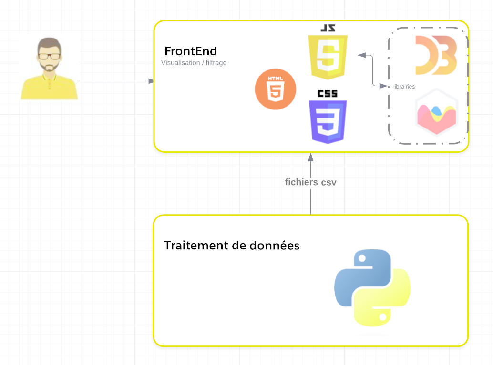

Voici le résultat de l'analyse de notre page web effectuée avec le calculateur d'impact GreenIT Analysis :

Ce projet est pour le but de traiter le sujet de l’état sanitaire de l’eau en France, nous nous baser sur les résultats des contrôles sanitaires de l’eau en France, ainsi que sur les achats de pesticides. Nous représentons les différentes informations pour chasue département.
Nous avons utilisé trois jeux de données pour notre projet :
La qualité de l’eau par commune : Dans ce jeu de données nous présentons l’état sanitaire de l’eau commune par commune dans la France, en se basant sur les résultats des analyses réalisées dans le cadre du contrôle sanitaire. Les champs qui retiendront particulièrement notre attention seront le nom de la commune et la conformité des différents prélèvements, bactériologiques et chimiques. Nous nous intéresserons à l’évolution de ces résultats sur les 7 dernières années.*
Achat de pesticides : Dans ce jeu de données, nous récupérons les commandes de pesticides par département et pour chaque année.
Départements de France : Ce jeu de données nous permet d'associer le nom du département avec son code.
Pour la partie visualisation, nous choisissons d’utiliser html/css et javascript avec les librairies D3.js et Chart.js, qui nous semblent adaptés pour les représentations que nous voulons faire. Nous utilisons Python pour le traitement des données.

Pour le traitement des données, nous avons utilisé des scripts python afin de ne garder que les champs qui nous intéressent dans les jeux de données. Les jeux de données étant des fichiers csv, nous décidons aussi de les convertir en fichiers JSON, simples à utiliser. Des calculs sur les données ont aussi été effectué (moyennes, sommes...) ainsi que divers formatages, à la fois des datasets et des JSON afin de rendre les données plus accessibles.
Nous avons choisi de représenter nos données sous forme d’une carte interactive. Sur cette carte il est possible de passer le curseur de la souris sur un département afin d’accéder aux statistiques complètes concernant la qualité de l’eau de celui-ci. En cliquant sur le département on accède à un graphique complet pour ce département, en y rajoutant les achats de pesticides. Ces données seront affichées dans une nouvelle page. De plus il est possible de choisir l'année pour laquelle on veut visualiser l'état de l'eau en France.
Voici le résultat de l'analyse de notre page web effectuée avec le calculateur d'impact GreenIT Analysis :